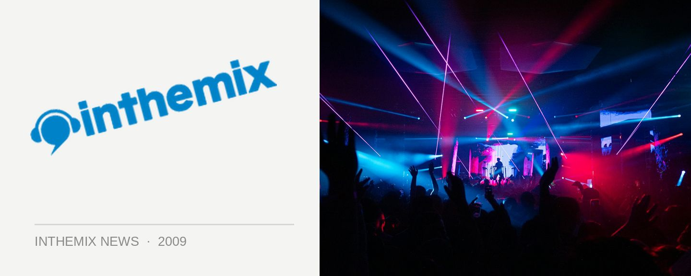

Trance titans Jon O'Bir and Mike Foyle's November tour
You didn’t think 2009 could get any hotter (or busier) for trance fans? Well think again, because both Jon O’Bir and Mike Foyle will be back in the country before the year is out. Jon will be playing a solo gig in Sydney in late October, while the pair will be performing together at several massive gigs across the country in the opening week of November.
Jon O’Bir will be returning after his visit with Godskitchen last year, still a aprt of Paul van Dyk’s Vandit stable with his new single Answers out shortly on the label. Mike Foyle on the other hand will be making his debut voyage to Australia, known for his lush piano-laden compositions, favoured by heavy-hitters like Armin van Buuren and Markus Schulz.
Jon O’Bir and Mike Foyle tour dates:
Friday Oct 30 – Sublime, Sydney (Jon O’Bir)
Monday Nov 2 – White Sands , Melbourne (Jon O’Bir & Mike Foyle)
Friday Nov 6 – Rise, Perth (Jon O’Bir & Mike Foyle)
Saturday Nov 7 – St Pauls, Adelaide (Jon O’Bir & Mike Foyle)